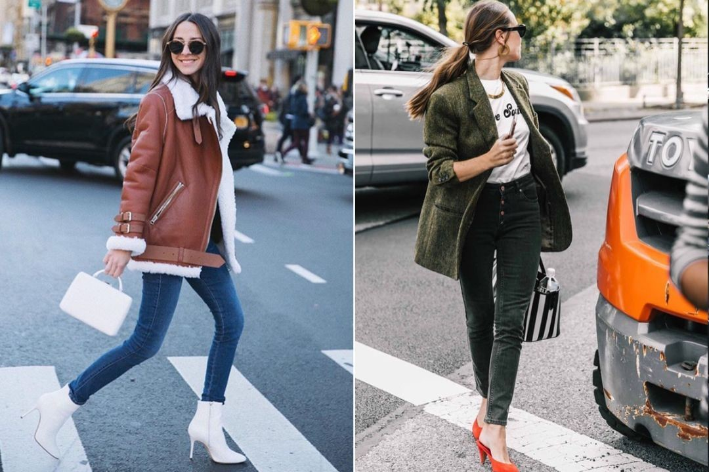

紧身牛仔裤 Skinny Jeans
先来说一说妹子们衣橱必备N条，让人又爱又恨的紧身裤Skinny Jeans!不少妹子早就集齐黑色、白色、深蓝、浅蓝、灰色Skinny Jeans了吧。
确实，紧身仔裤+大毛衣+高靴，三分钟时髦出门都不在话下，很适合喜欢偷懒的猪猪仙女了。
但真正要把Skinny Jeans穿的好看，还是得注意几点：
1. 腿形 & 臀形
紧身牛仔裤百搭是真的，但挑腿形也是真的——毕竟直接贴合腿部线条，
无论你的腿形有什么优缺点都会被放大好吗?
要把Skinny Jeans穿得好看，一定要像楼下这样腿形匀称，腿直、大腿紧实，臀部上翘。

2. 怎么扬长避短地搭?
必须推荐Skinny Jeans+长靴这对感人至深的秋冬最佳组合啊!保暖又Chic(还可以省去穿秋裤的纠结)。
安全起见，用黑色长靴搭配黑色或深蓝色仔裤，下半身顺色，分分钟腿增长5cm不是梦;
对自己大腿线条比较满意的话，则可以大胆尝试下深色长靴加浅色或者白色Skinny Jeans的组合，轻轻松松打破冬日沉闷，秀出腿部线条。
再推荐一种秋冬很流行的穿法：牛仔裤短一些，选8 - 9分的Skinny Jeans(想穿出新意的妹子不妨选楼下这样大热的裤脚磨破或腰间磨毛款，搭配短靴穿)，
重点是露出一点脚踝皮肤，看起来非常潇洒帅气;暖一些的时候还可以把短靴换成帆布鞋、乐福鞋……
直筒牛仔裤 Straight Leg Jeans
虽然紧身仔裤够经典，但这两年绝对算不上最火，
相比之下，可以修饰腿部线条、赘肉等各种问题的直筒裤势头超猛，加上直筒仔裤线条简单利落，穿上很有cool girl的味道
因为直筒裤看着略宽松，长度太长堆叠起来会给人一种拖沓感，
所以建议妹子们在选直筒裤时最好选择九分左右长度，不要太过宽松。
搭配上，既然下半身已经比较宽松和硬朗了，那就一定要凸显腰线。
像楼下这样选与牛仔裤颜色不同的内搭塞进裤子里，或通过短款上衣叠搭来提高和凸显腰线就是满分示范了～
另外，鞋子的搭配上，天气冷时可以搭配收口及踝靴这样才能减轻膨胀感，显瘦。
待天气稍微温暖些，穿上轻便的乐福鞋或者精致的穆勒鞋吧，
适当露出脚面皮肤，能缓解直筒裤带来的拖沓与厚重感，造型看起来更加清爽利落，有没有想马上扑到夏天里去的冲动?
喇叭裤 Flare Jeans
想要看起来干净清爽的话可以选择微喇款式，不仅具备了一般喇叭裤的复古时髦感，而且很好驾驭，
和短靴、西装外套随意搭配就能碰撞出80、90年代的感觉
如果选择八九分长度的微喇牛仔裤，就可以参考直筒裤的搭配方法，与精致的穆勒鞋和尖头高跟鞋搭配，气质妩媚;
与各种舒适美艳的小白鞋搭配起来，又可以非常青春活力。
以上就是本期介绍的三种牛仔裤。还是那句话，你不必有多完美的身材，选对适合自己的牛仔裤，你可以实现“看上去很完美”的好身材。